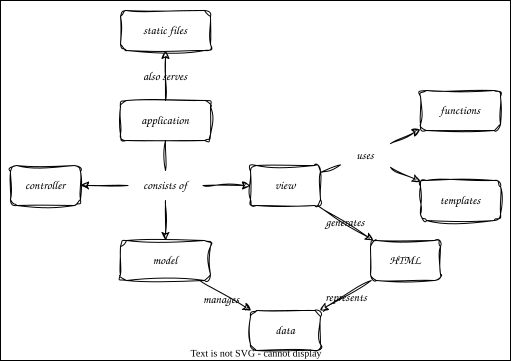

Serving HTML
Overview

Outline
- Introduce the view part of MVC and use Jinja templates
- Alternative htpy is more amenable to debugging but harder to read
- Add exceptions to
util.py- Common parent for all application exceptions to make catching easier
- Load templates from filesystem in
views.py- Allow caller to override default HTML template for
all_stafffor later use
- Allow caller to override default HTML template for
- Pass in data as named argument
- Use the sample template for single-row and multi-row views
- No changes to
models.py - A note on sub-directories:
- Most servers will not load things whose paths start with
../for security reasons - Run
server_paths.pyand go to/dotdotto see the effect - So assets need to be in directories below the server's root directory
- But
../static/image.pngworks because Flask removes the leading../
- Most servers will not load things whose paths start with
- The right way to do this is to configure a directory for static files
server_static_paths.pyFlask("server", static_folder=Path("../img").absolute(), static_url_path="/static")